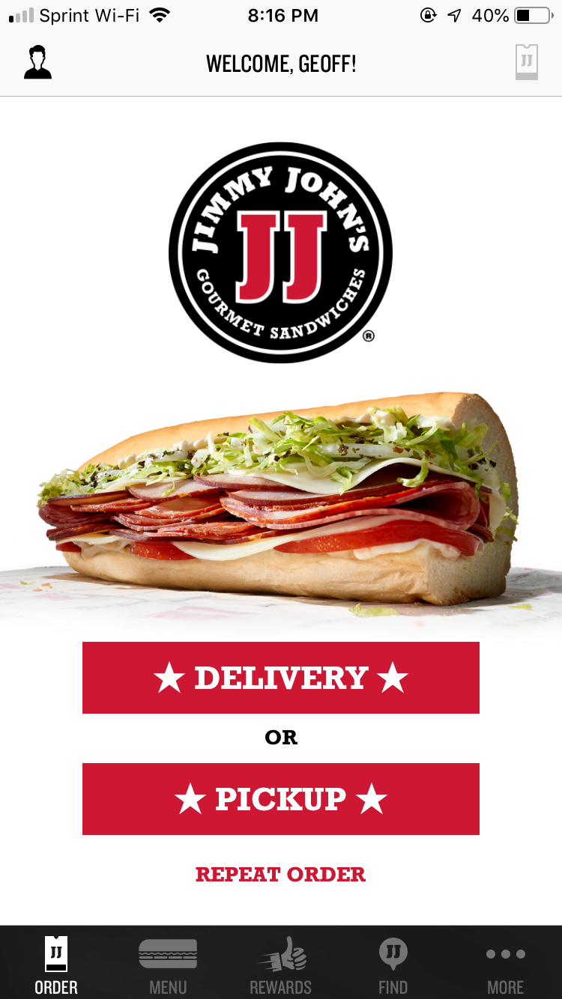
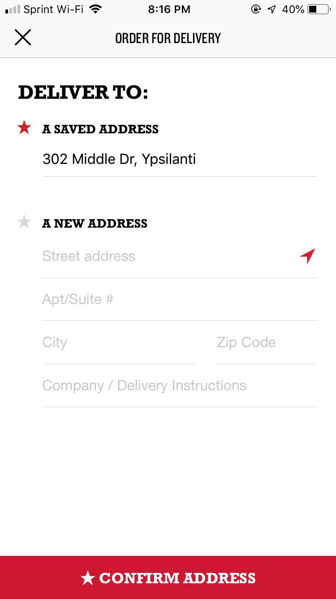
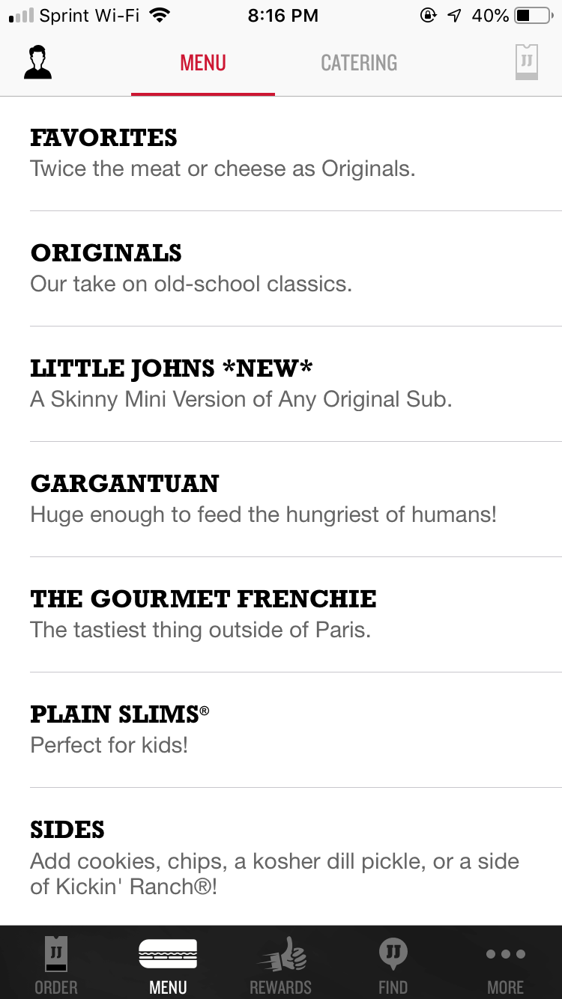
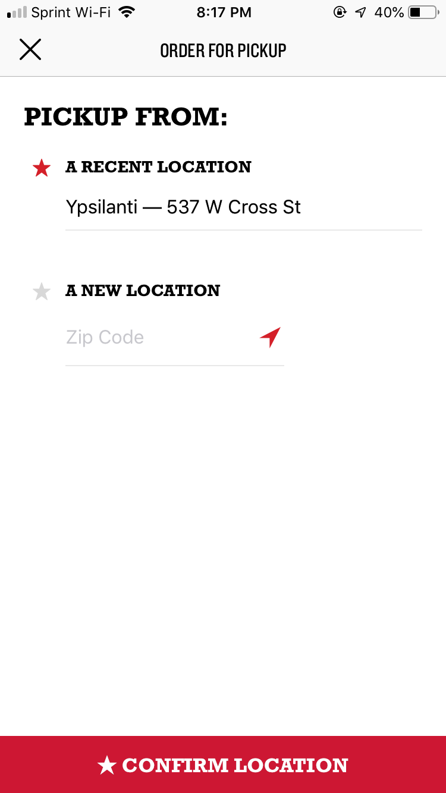
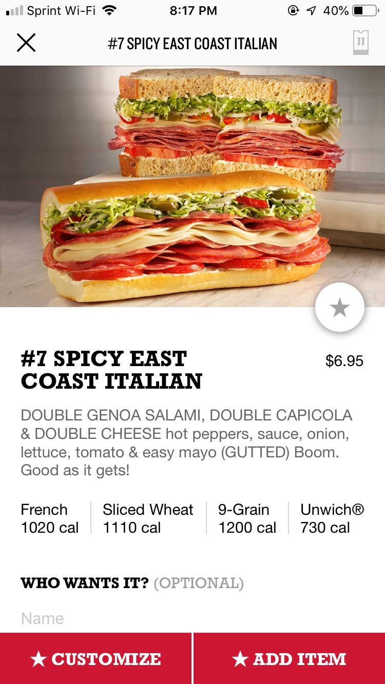

When it comes to thinking about UX, I look for anything extraneous that impacts my cognitive load, stops my momentum, or leaves me confused. When I look at a project, I really try and listen to my gut when I come up against a UX flaw. Am I offended? Why?